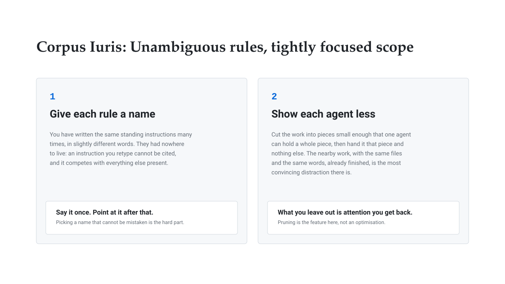
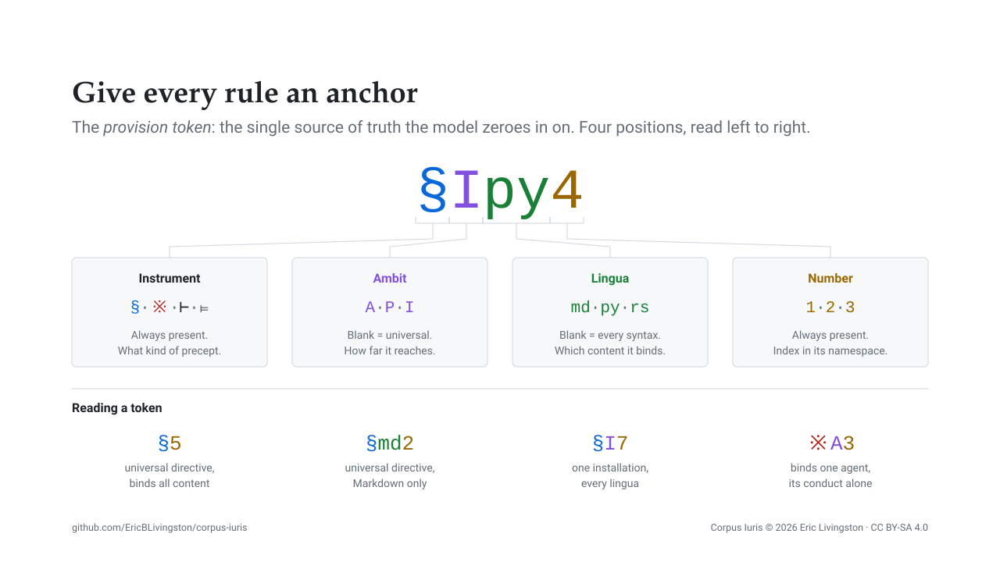
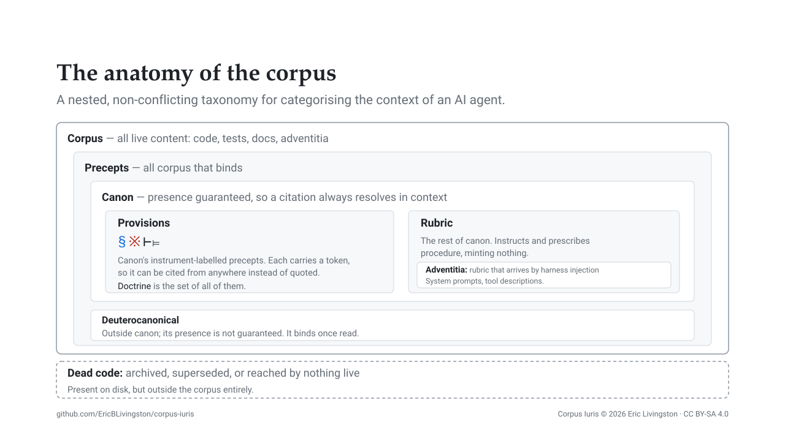
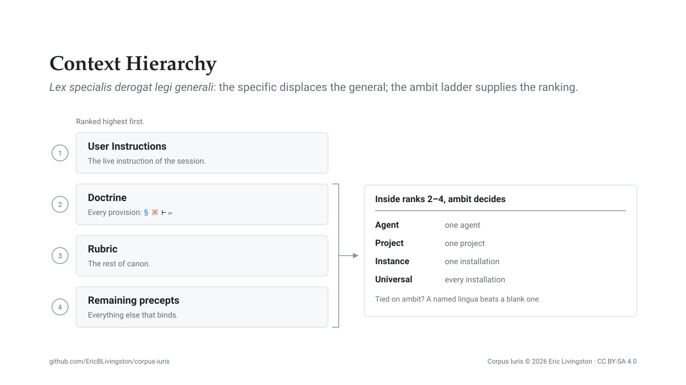
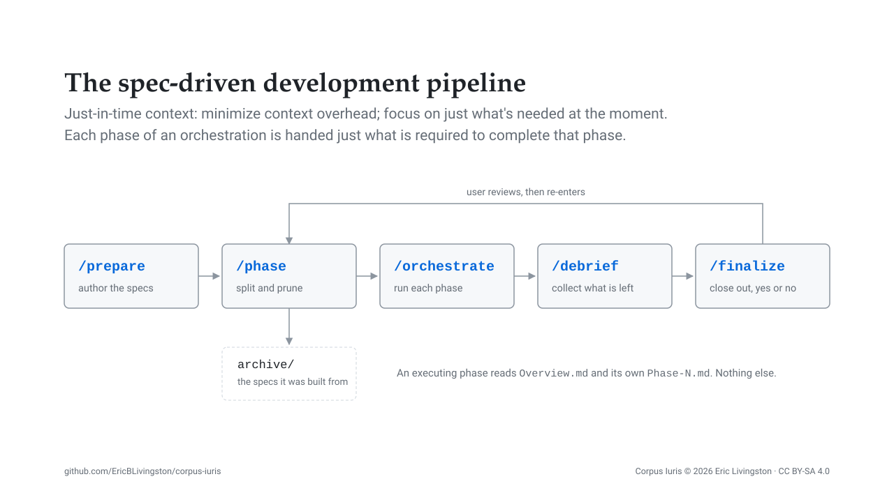
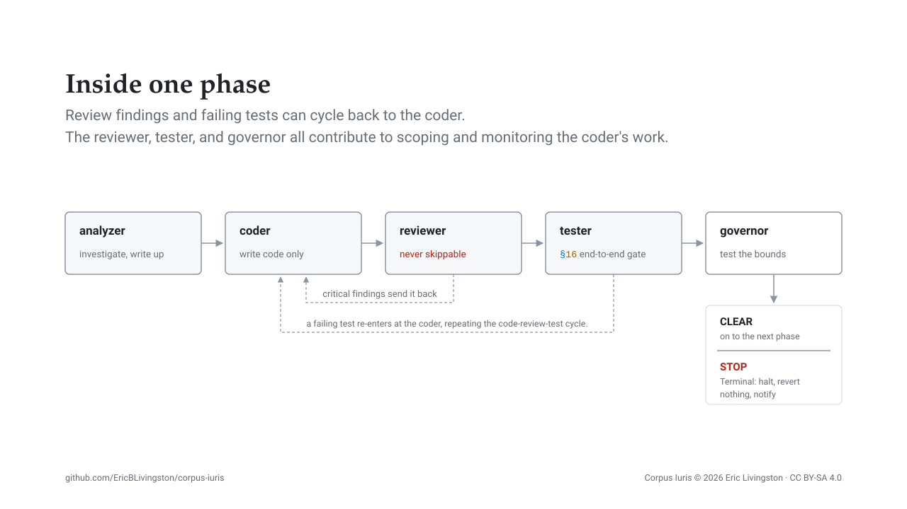
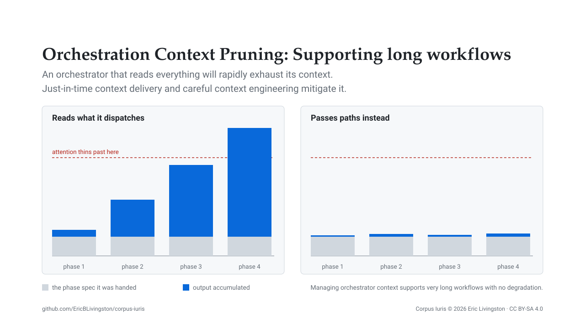
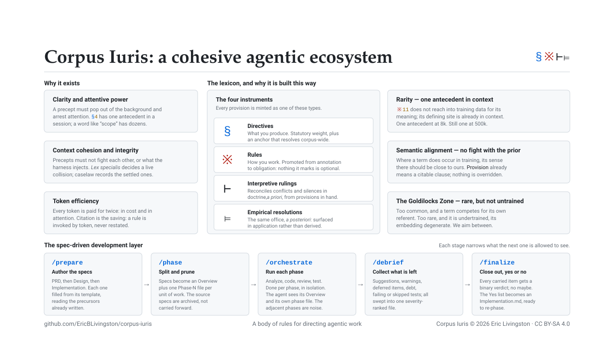

Corpus Iuris
Spec-driven development, a vocabulary built for retrieval, and a pipeline that keeps every agent's context small and focused.
Eric Livingston, PhD (Artificial Intelligence)
github.com/EricBLivingston/corpus-iuris/discussions
Corpus Iuris
And yet, the file is still not obeyed.
The rule is in context and does not pop out of the background.
The model never notices it, or misinterprets it.
Result: misdirected behaviour
Two rules collide, or one collides with what the harness injected.
The model picks one. Silently, and differently next time.
Result: erratic behaviour
The window fills, and the context dilutes.
The rules held at 8k tokens; by 500k, the model has none.
Result: rogue behaviour
Corpus Iuris

Corpus Iuris
Two of these you have written many times. The third is Corpus Iuris.
Corpus Iuris

Corpus Iuris
A citation resolves by attending back to the token's earlier occurrences. The question is how many candidates it finds.
Retrieval that can lean on a literal token match holds up under pressure. Retrieval relying on common words degrades sharply as the haystack grows.
Corpus Iuris
Each term has characteristics we exploit: rare in code, and trained with a compatible sense.
| Term | Trained sense/definition | How we use that |
|---|---|---|
| Ius | Roman law: law as a body of right, against lex, the single statute. | Names the body itself, so no one rule can be mistaken for the whole. |
| Provision | A clause of a statute or contract: a discrete, citable term. | Every rule gets a single, discrete identifier (§ ※ ⊢ ⊨), citable from anywhere. |
| Rubric | Liturgy: the red-letter directions for performing a rite, as against the words of the rite. | Procedure, separated from the precepts it carries out. |
| Adventitia | Literal: “externally added.” Descartes’ adventitious ideas: ideas arriving from outside, neither innate nor self-made. | What the harness supplies from outside; not always editable, handled case-by-case. |
| Lex specialis | Lex specialis derogat legi generali: the specific rule displaces the general one. | Adopted directly as our precedence rule. |
Corpus Iuris
We seek terms and symbols rare enough to offer low competition to our use, yet common enough to pull relevant meaning from training.
“rule”, “scope”, “standard”.
Competes with itself. Every occurrence in your own docs makes the next citation worse.
§ ※ ⊢ ⊨, provision, ambit, rubric.
Rare in your artifacts, rare in ordinary technical usage, and where the prior exists it already agrees.
Invented strings.
Undertrained vocabulary carries degenerate embeddings, leading to erratic behavior.
Corpus Iuris
The previous slide demonstrates the principle. We read Goldilocks and we understand far more than the single word imparts. A synergistic label the training already holds can retrieve what would cost paragraphs to say.
Corpus Iuris

Corpus Iuris
The following provision types comprise the Doctrine of the Corpus Iuris
| Token | Instrument | Example from the corpus |
|---|---|---|
| § | Directives what you produce |
§5 — Required means Required. A required parameter with a None default is a lie the type system cannot catch. |
| ※ | Rules how you work |
※10 — Leave It Better Than You Found It. Never withhold a file from scrutiny because it was just written or reviewed: recency of edit is risk, not safety. |
| ⊢ | Interpretive rulings a priori |
Two provisions contradict in principle, or doctrine is silent where it needed to speak. We decide it here, once; the holding binds every later reading. |
| ⊨ | Empirical resolutions a posteriori |
The same office, but the conflict or the silence only surfaced in the field. These are field-based lessons learned about how the corpus provisions interact. |
Corpus Iuris

Corpus Iuris

Corpus Iuris

Corpus Iuris

Corpus Iuris

Appendix
| Claim | Work |
|---|---|
| A model resolves a repeated token by matching its earlier occurrence and attending to what followed. | In-context Learning and Induction Heads arXiv:2209.11895 |
| Attention is a finite budget that softmax dilutes as context grows; length alone degrades performance. | Context Length Alone Hurts LLM Performance arXiv:2510.05381 · Long Context, Less Focus arXiv:2602.15028 |
| Irrelevant context competes with the signal rather than sitting beside it. | Large Language Models Can Be Easily Distracted by Irrelevant Context arXiv:2302.00093 |
| Distraction scales with resemblance to the question. | How Reasoning Models Fail with Contextual Distractors arXiv:2601.07226 · The Distracting Effect arXiv:2505.06914 |
| Long-context retrieval leans on literal token overlap and degrades sharply without it. | NoLiMa: Long-Context Evaluation Beyond Literal Matching arXiv:2502.05167 |
| Context and the parametric prior conflict, and which one wins is not reliably predictable. | Knowledge Conflicts for LLMs: A Survey arXiv:2403.08319 |
| Redefining a familiar term does not replace its trained sense; the prior keeps competing, and its strength predicts where the override fails. | Priors Persist Through Suppression arXiv:2606.07555 |
| Tokens too rare in training are undertrained, with degenerate embeddings. | Fishing for Magikarp arXiv:2405.05417 |